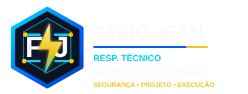

Eletricista e Eletrotécnico em Salvador – BA
Segurança Sempre em Primeiro LugarSou eletrotécnico há mais de 25 anos e atendo residências, empresas e indústrias em Salvador (BA) e no interior da Bahia: instalações, projetos, automação, painéis, redes e energia solar. Minha trajetória é marcada por compromisso, ética e proximidade com cada cliente. Mais do que executar serviços, busco entender a real necessidade de cada projeto e oferecer soluções seguras e personalizadas. Acredito que confiança se constrói no dia a dia, unindo conhecimento técnico, clareza na comunicação e respeito ao cliente.
👉 Entre em contato e conte comigo no seu próximo projeto: segurança, eficiência e tecnologia do início ao fim.
Não ignore os sinais de perigo! Fios expostos, tomadas aquecendo, disjuntores que desarmam com frequência e oscilações na rede elétrica são alertas claros de que algo está errado. Esses problemas podem parecer pequenos, mas escondem riscos sérios de choques, incêndios e prejuízos materiais. 👉 A solução é simples: conte com um profissional qualificado para revisar sua instalação, garantir sua segurança e evitar acidentes antes que seja tarde.